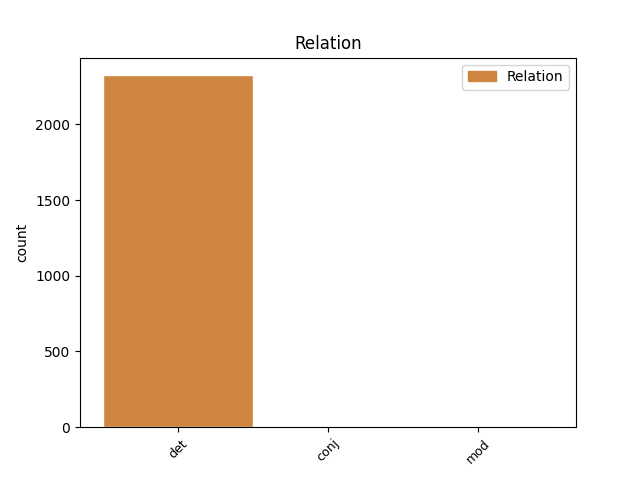
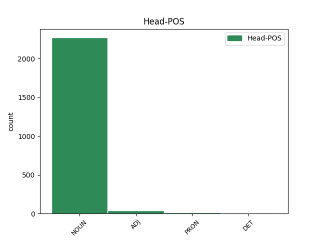
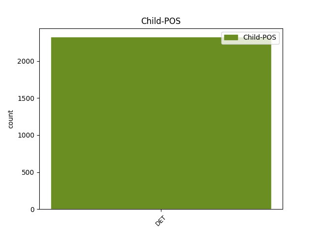

Distribution of features within this leaf



Agreement Rules sorted by frequency.
When the dependent token is None
1 Jag _ _ _ _ 0 _ _ _
2 rörde _ _ _ _ 0 _ _ _
3 mig _ _ _ _ 0 _ _ _
4 i _ _ _ _ 0 _ _ _
5 en en DET SG-IND Definite=Ind|Gender=Com|Number=Sing|PronType=Art 7 det _ _
6 svart _ _ _ _ 0 _ _ _
7 springares springare NOUN SG-IND-GEN Case=Gen|Definite=Ind|Gender=Com|Number=Sing 0 _ _ _
8 räta _ _ _ _ 0 _ _ _
9 vinklar _ _ _ _ 0 _ _ _
10 över _ _ _ _ 0 _ _ _
11 linjerna _ _ _ _ 0 _ _ _
12 , _ _ _ _ 0 _ _ _
13 men _ _ _ _ 0 _ _ _
14 utöver _ _ _ _ 0 _ _ _
15 några _ _ _ _ 0 _ _ _
16 uppskattande _ _ _ _ 0 _ _ _
17 affärsmän _ _ _ _ 0 _ _ _
18 fanns _ _ _ _ 0 _ _ _
19 det _ _ _ _ 0 _ _ _
20 ingen _ _ _ _ 0 _ _ _
21 där _ _ _ _ 0 _ _ _
22 som _ _ _ _ 0 _ _ _
23 verkade _ _ _ _ 0 _ _ _
24 intresserad _ _ _ _ 0 _ _ _
25 av _ _ _ _ 0 _ _ _
26 mig _ _ _ _ 0 _ _ _
27 . _ _ _ _ 0 _ _ _
Disagree Examples:
1 En _ _ _ _ 0 _ _ _
2 XML-schemafil _ _ _ _ 0 _ _ _
3 är _ _ _ _ 0 _ _ _
4 en _ _ _ _ 0 _ _ _
5 formell _ _ _ _ 0 _ _ _
6 specifikation _ _ _ _ 0 _ _ _
7 av _ _ _ _ 0 _ _ _
8 reglerna _ _ _ _ 0 _ _ _
9 för _ _ _ _ 0 _ _ _
10 ett _ _ _ _ 0 _ _ _
11 XML-dokument _ _ _ _ 0 _ _ _
12 , _ _ _ _ 0 _ _ _
13 som _ _ _ _ 0 _ _ _
14 innehåller _ _ _ _ 0 _ _ _
15 en en DET SG-IND Definite=Ind|Gender=Com|Number=Sing|PronType=Art 17 det _ _
16 rad _ _ _ _ 0 _ _ _
17 elementnamn elementnamn NOUN IND-NOM Case=Nom|Definite=Ind|Gender=Neut|Number=Plur 0 _ _ _
18 samt _ _ _ _ 0 _ _ _
19 information _ _ _ _ 0 _ _ _
20 om _ _ _ _ 0 _ _ _
21 vilka _ _ _ _ 0 _ _ _
22 element _ _ _ _ 0 _ _ _
23 som _ _ _ _ 0 _ _ _
24 är _ _ _ _ 0 _ _ _
25 tillåtna _ _ _ _ 0 _ _ _
26 i _ _ _ _ 0 _ _ _
27 dokumentet _ _ _ _ 0 _ _ _
28 och _ _ _ _ 0 _ _ _
29 i _ _ _ _ 0 _ _ _
30 vilka _ _ _ _ 0 _ _ _
31 kombinationer _ _ _ _ 0 _ _ _
32 . _ _ _ _ 0 _ _ _
1 Och _ _ _ _ 0 _ _ _
2 till _ _ _ _ 0 _ _ _
3 slut _ _ _ _ 0 _ _ _
4 sjönk _ _ _ _ 0 _ _ _
5 solen _ _ _ _ 0 _ _ _
6 i _ _ _ _ 0 _ _ _
7 sin _ _ _ _ 0 _ _ _
8 omärkligt _ _ _ _ 0 _ _ _
9 lutande _ _ _ _ 0 _ _ _
10 bana _ _ _ _ 0 _ _ _
11 mot _ _ _ _ 0 _ _ _
12 horisonten _ _ _ _ 0 _ _ _
13 och _ _ _ _ 0 _ _ _
14 skiftade _ _ _ _ 0 _ _ _
15 från _ _ _ _ 0 _ _ _
16 vitglöd _ _ _ _ 0 _ _ _
17 till _ _ _ _ 0 _ _ _
18 matt _ _ _ _ 0 _ _ _
19 rött _ _ _ _ 0 _ _ _
20 , _ _ _ _ 0 _ _ _
21 utan _ _ _ _ 0 _ _ _
22 strålar _ _ _ _ 0 _ _ _
23 och _ _ _ _ 0 _ _ _
24 utan _ _ _ _ 0 _ _ _
25 värme _ _ _ _ 0 _ _ _
26 , _ _ _ _ 0 _ _ _
27 som _ _ _ _ 0 _ _ _
28 om _ _ _ _ 0 _ _ _
29 hon _ _ _ _ 0 _ _ _
30 hållit _ _ _ _ 0 _ _ _
31 på _ _ _ _ 0 _ _ _
32 att _ _ _ _ 0 _ _ _
33 slockna _ _ _ _ 0 _ _ _
34 , _ _ _ _ 0 _ _ _
35 dödsmärkt _ _ _ _ 0 _ _ _
36 vid _ _ _ _ 0 _ _ _
37 beröringen _ _ _ _ 0 _ _ _
38 med _ _ _ _ 0 _ _ _
39 det _ _ _ _ 0 _ _ _
40 mörker _ _ _ _ 0 _ _ _
41 som _ _ _ _ 0 _ _ _
42 ruvade _ _ _ _ 0 _ _ _
43 över _ _ _ _ 0 _ _ _
44 ett en DET SG-IND Definite=Ind|Gender=Neut|Number=Sing|PronType=Art 45 det _ _
45 människomyller människomyller NOUN PL-IND-NOM Case=Nom|Definite=Ind|Gender=Com|Number=Plur 0 _ _ _
46 . _ _ _ _ 0 _ _ _
1 Ett en DET SG-IND Definite=Ind|Gender=Neut|Number=Sing|PronType=Art 3 det _ _
2 svagt _ _ _ _ 0 _ _ _
3 slammer slammer NOUN PL-IND-NOM Case=Nom|Definite=Ind|Gender=Com|Number=Plur 0 _ _ _
4 hördes _ _ _ _ 0 _ _ _
5 bakom _ _ _ _ 0 _ _ _
6 mig _ _ _ _ 0 _ _ _
7 och _ _ _ _ 0 _ _ _
8 jag _ _ _ _ 0 _ _ _
9 vände _ _ _ _ 0 _ _ _
10 mig _ _ _ _ 0 _ _ _
11 om _ _ _ _ 0 _ _ _
12 . _ _ _ _ 0 _ _ _
1 Jag _ _ _ _ 0 _ _ _
2 kunde _ _ _ _ 0 _ _ _
3 räkna _ _ _ _ 0 _ _ _
4 vartenda _ _ _ _ 0 _ _ _
5 revben _ _ _ _ 0 _ _ _
6 , _ _ _ _ 0 _ _ _
7 deras _ _ _ _ 0 _ _ _
8 leder _ _ _ _ 0 _ _ _
9 var _ _ _ _ 0 _ _ _
10 som _ _ _ _ 0 _ _ _
11 repknutar _ _ _ _ 0 _ _ _
12 ; _ _ _ _ 0 _ _ _
13 var _ _ _ _ 0 _ _ _
14 och _ _ _ _ 0 _ _ _
15 en _ _ _ _ 0 _ _ _
16 hade _ _ _ _ 0 _ _ _
17 en _ _ _ _ 0 _ _ _
18 järnkrage _ _ _ _ 0 _ _ _
19 om _ _ _ _ 0 _ _ _
20 halsen _ _ _ _ 0 _ _ _
21 och _ _ _ _ 0 _ _ _
22 alla _ _ _ _ 0 _ _ _
23 var _ _ _ _ 0 _ _ _
24 länkade _ _ _ _ 0 _ _ _
25 tillsammans _ _ _ _ 0 _ _ _
26 med _ _ _ _ 0 _ _ _
27 en _ _ _ _ 0 _ _ _
28 kedja _ _ _ _ 0 _ _ _
29 vars _ _ _ _ 0 _ _ _
30 bukter _ _ _ _ 0 _ _ _
31 svängde _ _ _ _ 0 _ _ _
32 mellan _ _ _ _ 0 _ _ _
33 dem _ _ _ _ 0 _ _ _
34 med _ _ _ _ 0 _ _ _
35 ett en DET SG-IND Definite=Ind|Gender=Neut|Number=Sing|PronType=Art 37 det _ _
36 rytmiskt _ _ _ _ 0 _ _ _
37 slammer slammer NOUN PL-IND-NOM Case=Nom|Definite=Ind|Gender=Com|Number=Plur 0 _ _ _
38 . _ _ _ _ 0 _ _ _
1 Det den DET SG-DEF Definite=Def|Gender=Neut|Number=Sing|PronType=Art 3 det _ _
2 skattemässiga _ _ _ _ 0 _ _ _
3 fördelarna fördel NOUN PL-DEF-NOM Case=Nom|Definite=Def|Gender=Com|Number=Plur 0 _ _ _
4 för _ _ _ _ 0 _ _ _
5 rena _ _ _ _ 0 _ _ _
6 fordon _ _ _ _ 0 _ _ _
7 skulle _ _ _ _ 0 _ _ _
8 då _ _ _ _ 0 _ _ _
9 fortfarande _ _ _ _ 0 _ _ _
10 kunna _ _ _ _ 0 _ _ _
11 sättas _ _ _ _ 0 _ _ _
12 in _ _ _ _ 0 _ _ _
13 två _ _ _ _ 0 _ _ _
14 år _ _ _ _ 0 _ _ _
15 innan _ _ _ _ 0 _ _ _
16 de _ _ _ _ 0 _ _ _
17 nya _ _ _ _ 0 _ _ _
18 normerna _ _ _ _ 0 _ _ _
19 träder _ _ _ _ 0 _ _ _
20 i _ _ _ _ 0 _ _ _
21 kraft _ _ _ _ 0 _ _ _
22 . _ _ _ _ 0 _ _ _